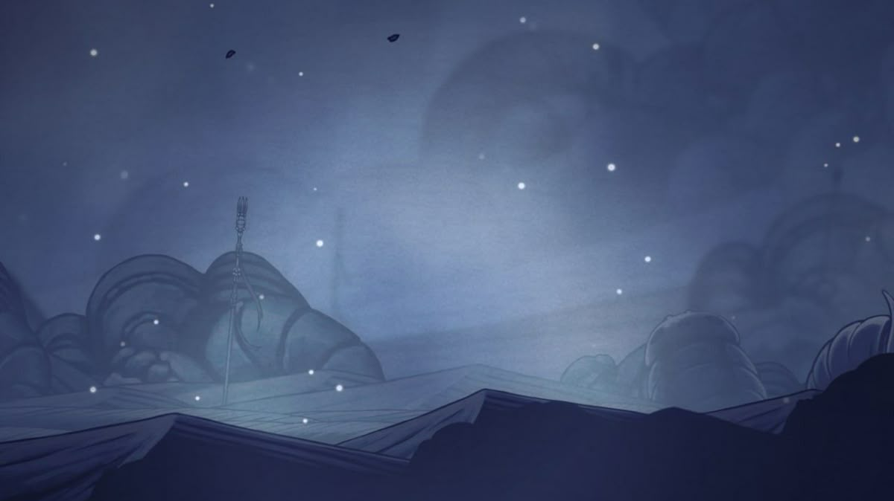

Geography
Regions
Vast territories shaped by history, climate and the forces that define the world. From forgotten deserts to thriving coastal settlements, every region tells its own story.


Vast territories shaped by history, climate and the forces that define the world. From forgotten deserts to thriving coastal settlements, every region tells its own story.